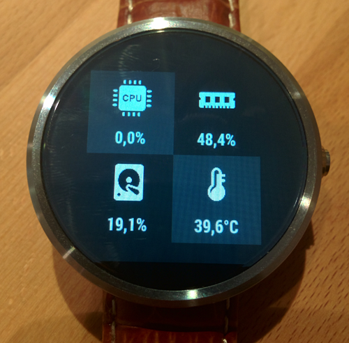

Manager twojego zegarka
Na komputerze lub na telefonie bez problemu jesteśmy w stanie sprawdzić ile miejsca na dysku pozostało nam wolnego oraz ile pamięci urządzenia jest aktualnie użytkowane. Jeśli chcemy te informacje uzyskać dla naszego zegarka, będziemy potrzebować aplikacji System Info.

Dlaczego warto zainstalować System Info?
Aplikacja wyświetla zużycie procesora wraz z historią, wskazuje 5 najaktywniejszych procesów i działa w czasie rzeczywistym. Poza tym możemy śledzić ile wolnego miejsca zostało w pamięci naszego zegarka, aktualną temperaturę i RAM. Z pozycji aplikacji także możemy uzyskać istotne informacje o urządzeniu, które tak naprawdę nie za często się przydają
Jednym zdaniem:
Przydatna aplikacja, warto od czasu do czasu zerknąć na zasoby naszego smartwatcha, by utrzymać go w dobrej formie
Pobierz z Google Play

Opublikowano: 24.03.2017r. Wszystkie materiały pochodzą ze strony developera